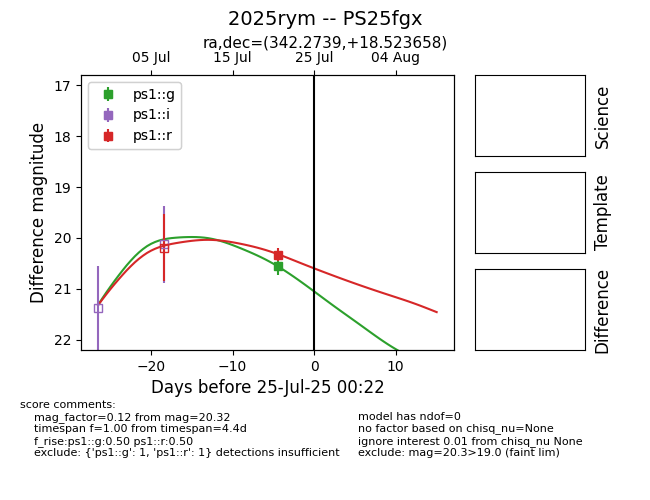

Target 2025rym at 2025-07-25 00:22, see:
TNS: wis-tns.org/object/2025rym
YSE: ziggy.ucolick.org/yse/transient_detail/2025rym
alt names
2025rym (yse,tns)
PS25fgx (panstarrs)
coordinates:
equatorial (ra, dec) = (342.2739,+18.52366)
galactic (l, b) = (86.5550,-35.56362)
photometry
last ps1::g=20.56, ps1::r=20.32
1 ps1::g, 1 ps1::r detections
